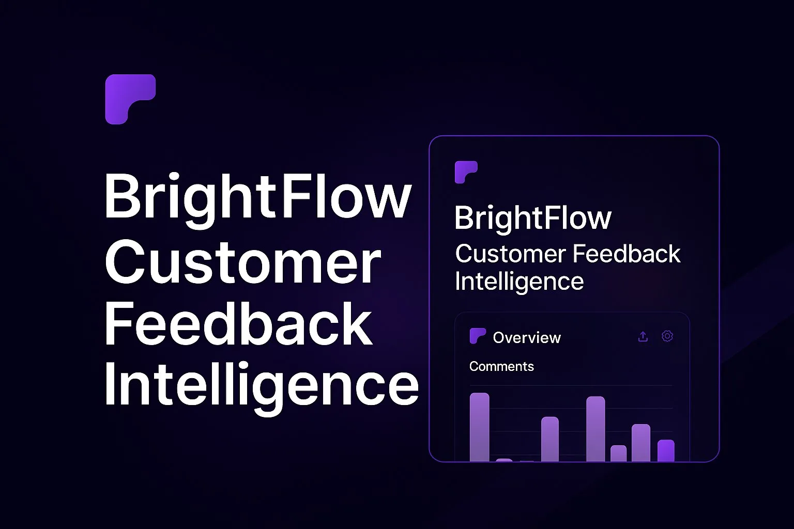

A SaaS product that decides what matters first
BrightFlow is a concept SaaS platform for turning customer feedback into product signals. The landing page and the dashboard share one constraint: a dense feature set and a wall of metrics both fail the same way when nothing is prioritized. Every structural decision here is about deciding what goes first, so the user never has to.
1
primary metric leads the dashboard · everything else is secondary, not competing
3
steps to the value prop · collect, see, act · each card does exactly one job
3
pricing tiers sized to team size · free, $29/mo, custom · not just a feature checklist

Standard SaaS dashboard · the pattern this addresses
When every metric gets equal visual weight, none of them read as urgent. The dashboard answers "what happened" but never "what should I do."
The problem
Dense SaaS feature sets and data-heavy dashboards share a failure mode: when everything is presented with equal weight, the interface hands the prioritization work back to the user instead of doing it for them.
A feature grid that explains everything explains nothing in particular. A dashboard that surfaces everything surfaces nothing first.
BrightFlow's response to both surfaces was the same: pick what matters, and let layout say so before copy has to. The landing page sequences itself around a single three-step logic. The dashboard commits to one number at a time. Neither relies on the visitor to do the sorting.
Structure before copy
The hero doesn't open with a paragraph explaining the product. It opens with three steps: collect everything, see patterns instantly, act with confidence. The product's logic is visible before a single feature is described: copy fills in detail the structure has already implied.
Copy-first
A paragraph explains what the product does, then a feature list backs it up. The visitor has to read the whole argument before the shape of the product becomes clear.
Structure-first
Three cards show the product's logic at a glance: collect, see, act. Copy underneath each card adds detail, but the shape of the product is already understood before any sentence is read.
The features grid below extends the same logic. Repeated cards with the same anatomy (icon, title, two lines) make a dense feature set scannable instead of a wall of text. The grid collapses to a single column on mobile, so the reading order stays the same regardless of screen width.

One metric, not three
The dashboard puts the most-read signal at the top of the visual hierarchy, full width, and keeps supporting data accessible below it without competing for attention. It's the number someone opens the product to check: comment volume, this week, against last week.
Equal metrics make everything the same priority, which makes nothing primary. A dashboard that highlights one number first answers "what should I look at" before the user has to ask.

Trust before the ask
Integrations and testimonials sit above the pricing section, not after it. A buyer evaluating a feedback tool wants to know it fits their existing stack and that other teams trust it before they look at what it costs. Trust markers placed after the price read as reassurance bolted on to close a sale already in motion.
The integrations map shows the tools the buyer already uses (Slack, Notion, Intercom) rather than a long list of every possible connection. Recognition does the work a feature list would otherwise have to argue for.
Pricing and the close
Three tiers, sized to team size rather than feature count: a free Starter plan for teams starting to track feedback, a Pro plan at a flat monthly rate for teams that need sentiment analysis and integrations at scale, and a Custom Enterprise tier for compliance and dedicated support. The free tier removes the first objection: trying the product costs nothing.
The FAQ that follows covers the objections that actually stop signups for a feedback tool: data ownership, integration limits, what happens when a team outgrows a tier. The footer stays minimal by design: once a visitor reaches the bottom of a pricing page, every extra choice is a chance to leave without acting. One action, nothing extra.
Reflections
I don't have usage data to confirm the hierarchy decision actually works. The case for one metric over three is sound on paper (Few's dashboard research backs the principle), but as a concept project, I never watched a real user scan this dashboard and act or not act. I'd want a click-tracking pass on the metric cards before trusting the decision past the design-review stage.
The page assumes a single, linear read. The structure-before-copy sequencing works if the visitor reads top to bottom in order. Real traffic scrolls erratically and jumps to pricing first. I'd test whether the trust signals in s04 still land when pricing is the first thing seen, not the fourth.
The tiers are sized by team size, with no label naming who each one is actually for. Veriflow's pricing case made the opposite choice (audience-first labels like "for solo operators"), and in hindsight that's the stronger pattern. "Starter / Pro / Enterprise" still asks the visitor to map themselves onto a tier; a label that names the buyer directly would remove that step.
Let's talk
Got a project?
Let's make it work.